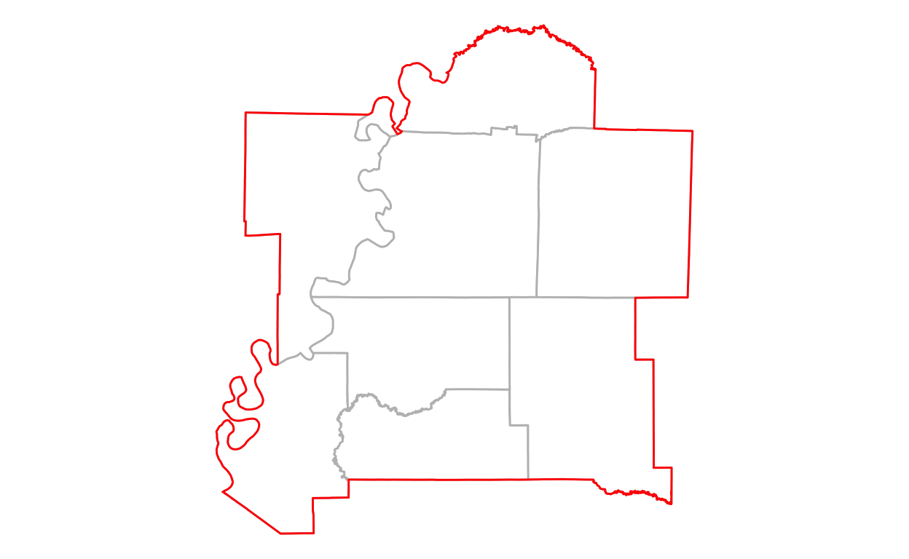
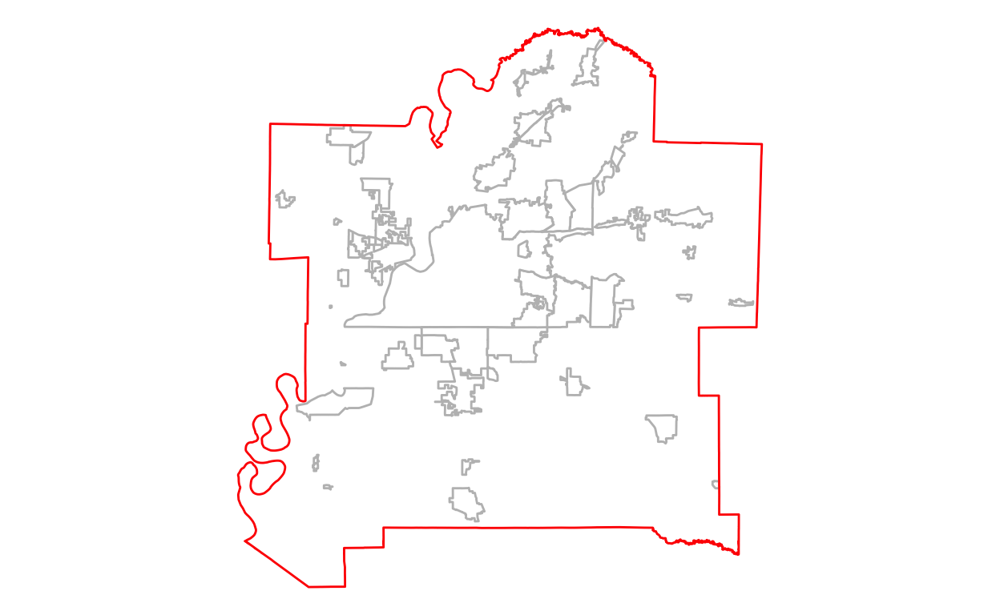
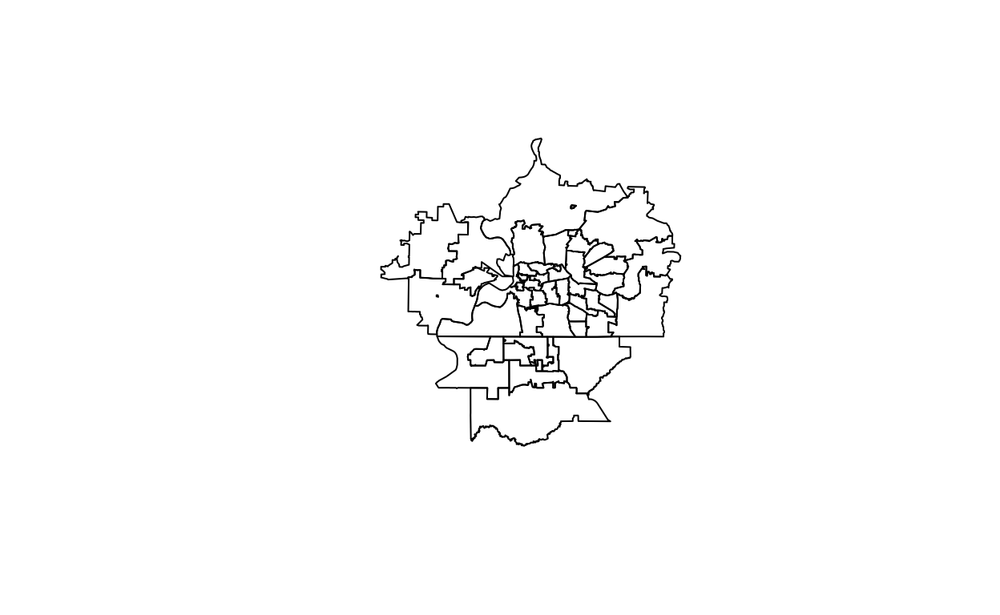
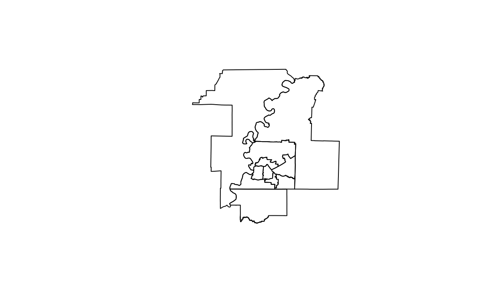
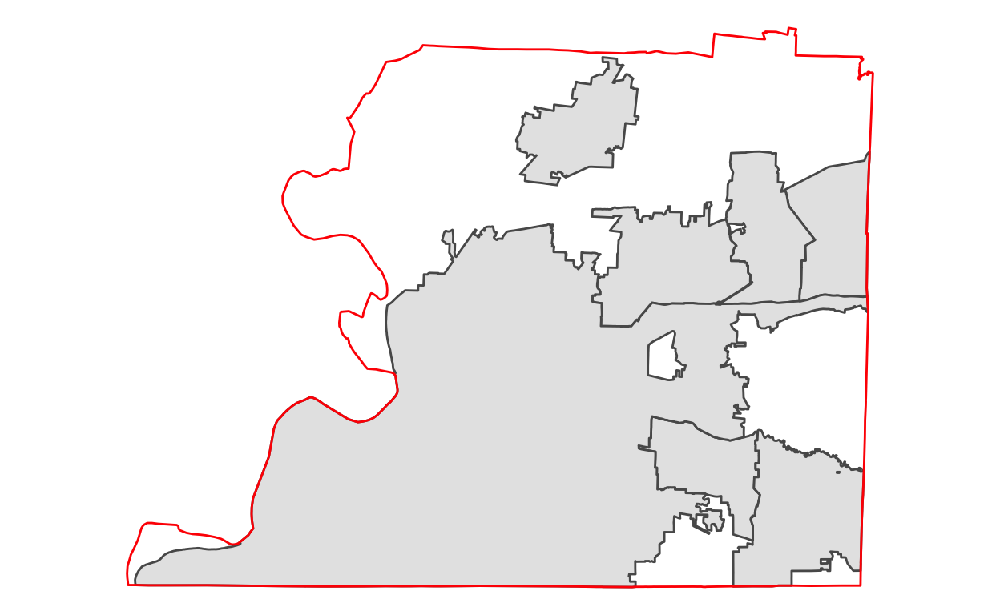
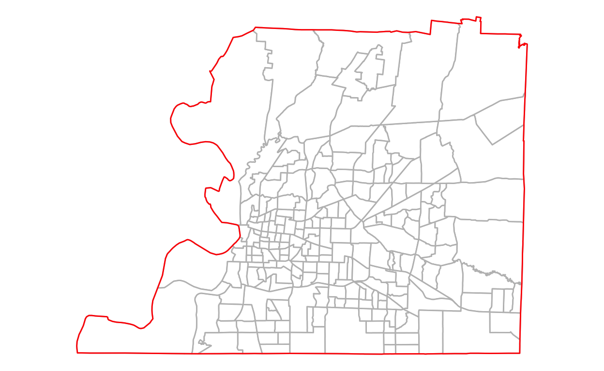
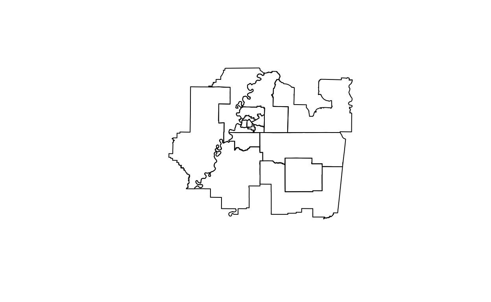

In this post I will map boundaries related to Memphis, TN.
Boundaries are made available by the US Census Bureau on their TIGER/Line Shapefiles page. These files do not contain demographic data, but their GEOIDs can be linked to other Census data.
In R, the tigris package can be used to access these boundaries. I’ll also use the sf package to ensure consistent coordinates and to filter geographic areas. I use ggplot in this post to make maps.
If you’re following along in R, load these packages to get started.
Determine which boundaries are best for your project. A full list of TIGER/Line boundaries available through tigris is available here.
CRS note: A coordinate reference system (crs) tells a map how to look. If your map doesn’t look right, like it’s skewed or warped or whatever, you probably need to set the crs. If you plan to combine maps, defining the crs ensures projections are consistent.
If you do not define a crs, it will default to 4269 (NAD 1983). Set the crs of a table using st_transform(crs = ####). You can check a table’s crs using st_crs(). For more info see here.
The package crsuggest can help find the correct crs for your map. I also found the website epsg.io useful; for example, see the boundaries for the crs code 6510 at https://epsg.io/6510. This crs code was the top suggestion for my maps, but the projection excluded Tennessee and I found the difference minimal from the default. For simplicity, I stuck with the default.
Memphis Metro Area
A metropolitan area is centered around an urban core and contains 50,000 or more people. A micropolitan area contains at least 10,000, but less than 50,000 people. The term core-based statistical area (CBSA) refers to these micro and metro areas. CBSAs are made of counties, including the county containing the urban core and any adjacent counties with “a high degree of social and economic integration” (measured by commute to work).1
Use the core_based_statistical_areas() function to get boundary data for all metropolitan and micropolitan areas in the United States. To find a specific place, filter the NAME column; in this case we are looking for Memphis.
metro <- core_based_statistical_areas() %>%
filter(str_detect(NAME, "Memphis"))
#' below example is in base R notation
#' cbsa <- core_based_statistical_areas()
#' metro <- cbsa[grep("Memphis", cbsa$NAME), ]
plot(metro$geometry)
Counties within Metro
The Memphis metro area covers three states: Tennessee, Mississippi, and Arkansas. If we want to see which counties are in the metro area, we’ll need to get data for each state. We can do with the counties() function.
To get data for multiple states at once, we can use the map_dfr() function. This tells R to get data for counties("AR"), counties("TN"), and counties("MS"), then joins those tables into one.
Next we can use base R notation to filter the stateCounties to only counties within the metro area. Note: removing the op = st_within will return all counties within and adjacent to the boundary area.
metroCounties <- stateCounties[metro, op = st_within]
Then we can use ggplot to create a map of our data showing metroCounties in grey and an outline of the metro area in red.
ggplot() +
geom_sf(data = metroCounties, fill = "white", color = "grey") +
geom_sf(data = metro, fill = NA, color = "red") +
theme_void()

Places within Metro
Similarly, we can find places within the metro area. A place is a legally incorporated area or a Census Designated Place (CDP), which is not legally incorporated but contains a concentration of populations identifiable by name and used for statistics purposes. There’s no population size requirements for CDPs.
First we get the data using places(), then we filter is using base R notation, then we plot it using ggplot.
statePlaces <- map_dfr(c("AR", "TN", "MS"), ~{
places(.x)
})
metroPlaces <- statePlaces[metro, op = st_within]
ggplot() +
geom_sf(data = metroPlaces, fill = "white", color = "grey") +
geom_sf(data = metro, fill = NA, color = "red") +
theme_void()

Urban Areas
Because CBSA boundaries are set by county lines (rather than where people actually live and work), their boundaries can be too broad for the project we are working on. Urban areas include “urbanized areas,” which are densely developed areas with at least 50,000 people, and “urban clusters,” which have a between 2,500 and 50,000 people.2
urb <- urban_areas() %>%
filter(str_detect(NAME10, "Memphis"))
#' alt example in base R notation:
#' uas <- urban_areas()
#' urb <- uas[grep("Memphis", uas$NAME10), ]
ggplot() +
geom_sf(data = metroCounties, fill = "white", color = "grey") +
geom_sf(data = urb, fill = NA, color = "red") +
theme_void()

ZCTAs in Urban Areas
ZCTAs are Census representations of USPS ZIP Codes.3 Usually the ZCTA file is massive; if cb = TRUE it is around 502MB, and cb = FALSE is around 64 MB. You can narrow down this file by specifying the beginning digits of ZCTAs you want to return.
Lucky for me, the Memphis urban area is used in the CRAN example for how to use the zctas() function. According to the example, I should filter for ZCTAs that start with “37,” “38,” and “72.” I’ve always lived around here in a 38*** ZIP code, so it sounds right.
zcta <- zctas(cb = TRUE, starts_with = c("37", "38", "72"))
urbZCTA <- zcta[urb, ]
plot(urbZCTA$geometry)

PUMAs in Urban Areas
Public Use Micro Areas (PUMAs) contain at least 100,000 people. They are notably used with Public Use Microdata Sample (PUMS) data, which are anonymized individual-level Census records. This data is useful to researchers who can create custom queries of data rather than using pre-tabulated estimates provided by the Census Bureau.
statePUMAS <- map_dfr(c("AR", "TN", "MS"), ~{
pumas(.x)
})
urbPUMAS <- statePUMAS[urb, ]
plot(urbPUMAS$geometry)

Shelby County
Next let’s focus on Shelby County, which contains Memphis. We can filter our metroCounties data from earlier.
shelby <- metroCounties %>%
filter(str_detect(NAME, "Shelby"))
This gives us an outline of Shelby County.
Places within County
There is a decent amount of unincorporated area in Shelby County. We can see this by finding all the places() in the county.
shelbyPlaces <- metroPlaces[shelby, op = st_within]
ggplot() +
geom_sf(data = shelbyPlaces) +
geom_sf(data = shelby, fill = NA, color = "red") +
theme_void()

Tracts within County
We can get Census tract data using the tracts() function. At this level we can also specify a county name, such as “Shelby,” so we don’t have to filter the data.
tracts <- tracts("TN", "Shelby")
ggplot() +
geom_sf(data = tracts, fill = "white", color = "grey") +
geom_sf(data = shelby, fill = NA, color = "red") +
theme_void()

Boundaries Over Time
As places grow and change, so do their boundaries. It’s important we know how boundaries have changed over time before we began analyzing time-series data.
We’ll need some extra packages for this section to create our final maps.
Tracts within County
To create a map over a certain period of time, use map(seq()) functions. Set your start year, end year, and interval, and define your tigris geography, setting year = .x. In the same mapping function, set up your ggplot() and use the glue() function to automatically label maps with the year and number of rows for that year (equal to the number of tracts).
Then we can use patchwork to set up our plots.
(tractsPlot[[1]] + tractsPlot[[2]]) /
(tractsPlot[[3]] + tractsPlot[[4]])

Shelby County gained 65 tracts from 1990 to 2020.
Acknowledgments
To create this post I mostly referenced the book Analyzing US Census Data by Kyle Walker, particularly chapters 5 and 7.
US Census Bureau, “ZIP Code Tabulation Areas (ZCTAs),” October 8, 2021, https://www.census.gov/programs-surveys/geography/guidance/geo-areas/zctas.html.↩︎
Tigris, “Urban_areas: Download an Urban Areas Shapefile into R in Tigris: Load Census TIGER/Line Shapefiles,” September 23, 2021, https://rdrr.io/cran/tigris/man/urban_areas.html.↩︎